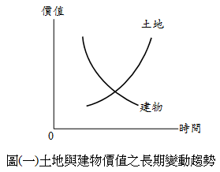
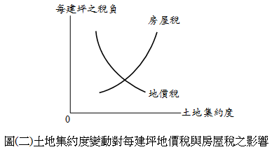
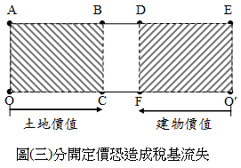
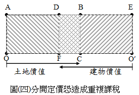

主題精選：房屋稅¶
共收錄 17 篇文章。
1. 差別稅率¶
發布日期: 2025-10-02
內文¶
土地稅採差別稅率之目的，在達成其政策目的（如平均社會財富、實現地利共享、打擊炒房投機等）。茲分述如下：
• (一) 地價稅之差別稅率：地價稅針對申報地價總額（即地價稅之稅基）與累進起點地價之倍數大小的不同，採差別稅率，以抑制兼併、壟斷土地。
• (二) 土地增值稅之差別稅率：土地增值稅針對土地漲價總數額（即土地增值稅之稅基）與原地價（即原規定地價或前次申報移轉現值）之倍數大小的不同，採差別稅率，以實現地利共享，並減少投機誘因。
• (三) 房地合一所得稅之差別稅率：房地合一所得稅針對持有房地年數長短的不同，採差別稅率，以懲罰短期持有及打擊炒房投機。
• (四) 房屋稅之差別稅率：房屋稅針對持有房屋戶數的不同，採差別稅率，以制止囤房投機。
值得一提的是，地價稅及土地增值稅屬於累進稅，房地合一所得稅及房屋稅屬於比例稅。不論累進稅或比例稅，皆可採差別稅率，發揮租稅之政策效果。
注：本文圖片存放於 ./images/ 目錄下
2. 房屋同時作營業與自住使用之房屋稅計算案例¶
發布日期: 2025-08-12
內文¶
王大於114年1月新建一間樓地板面積為300平方公尺之房屋，並於當月開始起課房屋稅，其中15平方公尺供作飲料店營業使用，其餘面積則供自住使用。假設該房屋核定單價為每平方公尺8,000元，折舊率1%，地段等級調整率為200%，則王大當年應納房屋稅稅額為何？（該縣市營業用稅率為3%）
擬答
房屋同時作住家及非住家用者，應以實際使用面積，分別按住家用或非住家用稅率，課徵房屋稅。但非住家用者，課稅面積最低不得少於全部面積六分之一。 300×1/6＝50＞15，因此，以50平方公尺作為非住家用課稅面積。
• (一) 非住家營業用
-
稅基 房屋現值＝核定單價×面積×(1-折舊率×經歷年數)×街路等級調整率 ＝8,000×50×(1-1%×0)×200% ＝800,000(元)
-
稅率 供營業、私人醫院、診所或自由職業事務所使用者，最低不得少於其房屋現值3%，最高不得超過5%。而該縣市訂定營業用稅率為3%
-
應納房屋稅 800,000×3%＝24,000(元)
• (二) 住家自住用
-
稅基 房屋現值＝核定單價×面積×(1-折舊率×經歷年數)×街路等級調整率 ＝8,000×(300-50)×(1-1%×0)×200% ＝4,000,000(元)
-
稅率 供自住、公益出租人出租使用或以土地設定地上權之使用權房屋並供該使用權人自住使用者，為其房屋現值1.2%。
-
應納房屋稅 4,000,000×1.2%＝48,000(元)
• (三) 王大當年應納房屋稅稅額
新建係按月比例計課(1至6月) (24,000+48,000) ×6/12＝36,000(元)
注：本文圖片存放於 ./images/ 目錄下
3. 地價稅與房屋稅之信託歸戶對照¶
發布日期: 2024-12-05
內文¶
• (一) 地價稅之信託歸戶：信託土地應與委託人在同一直轄市或縣（市）轄區內所有之土地合併計算地價總額，依規定稅率課徵地價稅，分別就各該土地地價占地價總額之比例，計算其應納之地價稅。但信託利益之受益人為非委託人且符合下列各款規定者，前項土地應與受益人在同一直轄市或縣（市）轄區內所有之土地合併計算地價總額：
-
受益人已確定並享有全部信託利益者。
-
委託人未保留變更受益人之權利者。（土稅§3-1 II）
• (二) 房屋稅之信託歸戶：依規定計算房屋戶數時，房屋為信託財產者，於信託關係存續中，應改歸戶委託人，與其持有房屋，分別合併計算戶數。但信託利益之受益人為非委託人，且符合下列各款規定者，應改歸戶受益人：
-
受益人已確定並享有全部信託利益。
-
委託人未保留變更受益人之權利。（房§5 III）
• (三) 比較：
-
地價稅就土地價格歸戶，房屋稅就房屋戶數歸戶。
-
地價稅以直轄市、縣（市）為歸戶範圍，房屋稅以全國為歸戶範圍。
-
地價稅歸戶之目的在累計申報地價（稅基），以適用累進稅率。房屋稅歸戶之目的在累計戶數，以適用囤房稅率。
【附註】
-
土稅：土地稅法
-
房：房屋稅條例
注：本文圖片存放於 ./images/ 目錄下
4. 房屋稅計算範例（囤房稅修法後）¶
發布日期: 2024-10-08
內文¶
兄妹甲、乙、丙三人在相同行政區相同地段各擁有一棟鋼筋混凝土造2樓透天不動產，完工時間與房屋稅起課日期皆為民國87年7月1日，每層樓皆為3公尺高，每人的房屋面積皆為300m2，房屋標準單價為2,700元/m2。甲的房屋純供開業地政士事務所使用；乙的房屋非自住但借予其小叔供住宅使用；丙的房屋原供自住，但108年1月1日改為營業用。假設每年折舊率1%，地段調整率110%，則甲、乙、丙三人今年度（107年7月1日至108年6月30日）各應繳納房屋稅額為何？（自用住宅稅率為1.2%，非自住宅稅率為1.5%，非住非營稅率為2%，營業用稅率為3%）（108年地政士考題）
甲乙丙房屋稅計算如下：
-
甲房屋供開業地政士事務所使用，適用營業用稅率3%： [2,700 × (1－1%×20) × 110% × 300] × 3% = 21,384元
-
乙房屋借予其小叔供住宅使用，適用非自住之其他住家用稅率2%至4.8%，以下假設適用2%計算： [2,700 × (1－1%×20) × 110% × 300] × 2% = 14,256元
-
丙房屋原供自住，後改為營業用致稅額增加，依規定自變更之次期（109年）開始適用，故108年度房屋稅仍適用自住用稅率1.2%： [2,700 × (1－1%×20) × 110% × 300] × 1.2% = 8,553元
因此，甲應繳納房屋稅21,384元；乙應繳納房屋稅14,256元；丙應繳納房屋稅8,553元。
注：本文圖片存放於 ./images/ 目錄下
5. 設籍（辦竣戶籍登記）之綜合整理¶
發布日期: 2024-08-01
內文¶
政府給予不動產租稅優惠，常規定須設有戶籍。一般而言，設籍分為下列二種不同規定：
• (一) 須有本人、配偶或直系親屬設籍（設籍條件較寬鬆）： 諸如：
-
地價稅之自用住宅用地優惠稅率（2‰）。
-
房屋稅之自住房屋（1%或1.2%）。
-
土地增值稅之一生一次優惠稅率（10%）。
-
土地增值稅之重購退稅。
• (二) 須有本人、配偶或未成年子女設籍（設籍條件較嚴格）： 諸如：
-
土地增值稅之一生一屋優惠稅率（10%）。
-
房地合一所得稅之自住房地免稅（400萬元以下部分，免稅）及優惠稅率（超過400萬元之部分，稅率10%）。
-
房地合一所得稅之重購退稅。
例如：甲擁有一棟自己居住使用之房屋，並由其已成年子女乙設籍。如單單考慮設籍因素，則持有時，得適用自用住宅用地之地價稅優惠及自住房屋之房屋稅優惠；移轉時，得適用自用住宅用地之土地增值稅一生一次優惠稅率及重購退稅；移轉時，不得適用自住房地之房地合一所得稅免稅、優惠稅率及重購退稅。
注：本文圖片存放於 ./images/ 目錄下
6. 房屋稅自住優惠稅率之條件¶
發布日期: 2024-05-02
內文¶
供自住者，房屋稅率為1.2%。全國僅持有一戶房屋供自住者，房屋稅率為1%。
• (一) 自住稅率1.2%之條件：
-
戶籍條件：本人、配偶或直系親屬辦竣戶籍登記，並供其實際居住使用。
-
使用條件：房屋無出租或營業使用。
-
戶數條件：本人、配偶及未成年子女持有住家用房屋全國合計三戶內。
• (二) 自住稅率1%之條件：
-
戶籍條件：本人、配偶或直系親屬辦竣戶籍登記，並供其實際居住使用。
-
使用條件：房屋無出租或營業使用。
-
戶數條件：本人、配偶及未成年子女於全國僅持有一戶房屋。
-
現值條件：房屋現值在一定金額以下。一定金額由直轄市及縣（市）政府訂定，報財政部備查。
注：本文圖片存放於 ./images/ 目錄下
7. 地震等重大災害之不動產稅捐減免規定¶
發布日期: 2024-04-09
內文¶
倘若發生地震等重大災害時，不動產受到災損影響，其相關稅捐減免規定茲簡要整理如下：
• 一、房屋稅
• (一) 情形
-
尚可使用 私有房屋有受重大災害，毀損面積占整棟面積三成以上不及五成之房屋情形，其房屋稅減半徵收(房§15II)。
-
無法使用 私有房屋有受重大災害，毀損面積占整棟面積五成以上，必須修復始能使用之房屋情形，免徵房屋稅(房§15I⑦)
-
滅失或拆除 房屋遇有焚燬、坍塌、拆除至不堪居住程度者，應由納稅義務人申報當地主管稽徵機關查實後，在未重建完成期內，停止課稅 (房§8)。
• (二) 程序
應由納稅義務人於每期房屋稅開徵四十日以前向當地主管稽徵機關申報；逾期申報者，自申報之次期開始適用。經核定後減免原因未變更者，以後免再申報(房§15III)。
• 二、地價稅
• (一) 情形
因山崩、地陷、流失、沙壓等環境限制及技術上無法使用之土地，地價稅全免 (土稅減§12)。
• (二) 程序
申請減免地價稅者，應於每年開徵四十日前（9月22日）提出申請；逾期申請者，自申請之次年起減免。減免原因消滅，自次年恢復徵收(土稅減§24)。
• 三、申請延期或分期
-
納稅義務人因天災、事變、不可抗力之事由或為經濟弱勢者，不能於法定期間內繳清稅捐者，得於規定納稅期間內，向稅捐稽徵機關申請延期或分期繳納，其延期或分期繳納之期間，不得逾三年(稅稽§26)。
-
所稱延期繳納，指延長繳納期限，一次繳清應納稅捐；所稱分期繳納，指每期以一個月計算，分次繳納應納稅捐。
-
僅得就延期或分期繳納擇一適用。
-
延期最長12個月，分期最長得分36期。 （納稅義務人申請延期或分期繳納稅捐辦法）
注：本文圖片存放於 ./images/ 目錄下
8. 房屋稅條例之住家稅率¶
發布日期: 2024-02-29
內文¶
◎依據民國113年1月3日修正公布之「房屋稅條例」規定，住家用房屋之房屋稅率為何？
【解答】
• (一) 供自住、公益出租人出租使用或以土地設定地上權之使用權房屋並供該使用權人自住使用者，為其房屋現值1.2%。但本人、配偶及未成年子女於全國僅持有一戶房屋，供自住且房屋現值在一定金額以下者，為其房屋現值1%。
• (二) 前款以外，出租申報租賃所得達所得稅法規定之當地一般租金標準者或繼承取得之共有房屋，最低不得少於其房屋現值1.5%，最高不得超過2.4%。
• (三) 起造人持有使用執照所載用途為住家用之待銷售房屋，於起課房屋稅二年內，最低不得少於其房屋現值2%，最高不得超過3.6%。
• (四) 其他住家用房屋，最低不得少於其房屋現值2%，最高不得超過4.8%。
直轄市及縣（市）政府應依上開第2款至第4款規定，按各該納稅義務人全國總持有應稅房屋戶數或其他合理需要，分別訂定差別稅率；納稅義務人持有坐落於直轄市及縣（市）之各該應稅房屋，應分別按其全國總持有戶數，依房屋所在地直轄市、縣（市）政府訂定之相應稅率課徵房屋稅。
注：本文圖片存放於 ./images/ 目錄下
9. 不動產持有稅之課徵效果¶
發布日期: 2023-09-14
內文¶
不動產持有稅主要是地價稅及房屋稅。我國現行採土地與建物分開課徵持有稅。地價稅之課徵標的為土地，房屋稅之課徵標的為建物。
課徵不動產持有稅之效果如下：
• (一) 稅的資本化效果：課徵地價稅及房屋稅，經過稅的資本化效果，促使不動產價格下跌。
• (二) 持有成本效果：持有稅將加重不動產所有人之持有成本，促使閒置不動產釋出，加入土地市場。
• (三) 固定成本或變動成本效果：
-
地價稅有固定成本效果：對土地課稅會發生固定成本效果。土地開發業者增加建物樓地板面積之興建，可以稀釋每建坪之地價稅負擔，因而提高土地集約度。
-
房屋稅有變動成本效果：對資本課稅會發生變動成本效果。土地開發業者增加建物樓地板面積之興建，其每建坪之房屋稅反而愈高。因此，房屋稅會阻礙資本累積及妨礙土地利用。
基上，就促進土地利用而言，地價稅應從重，房屋稅應從輕。¶
注：本文圖片存放於 ./images/ 目錄下
10. 房屋稅減半徵收之適用：平民住宅、國民住宅、社會住宅、臨時工廠、特定工廠？¶
發布日期: 2023-01-10
內文¶
首先，房屋稅減半徵收之相關規定情形如下：
房屋稅條例第 15 條第2項 私有房屋有下列情形之一者，其房屋稅減半徵收： 一、政府平價配售之平民住宅。 二、合法登記之工廠供直接生產使用之自有房屋。 三、農會所有之自用倉庫及檢驗場，經主管機關證明者。 四、受重大災害，毀損面積佔整棟面積三成以上不及五成之房屋。
農產品市場交易法第 17 條農產品批發市場之土地及房屋，減半徵收房屋稅、地價稅或田賦。
以下就相關名詞說明之：
• 一、平民住宅 其中，何謂平價配售之平民住宅，根據釋字第267號及臺財稅字第37639號、台財稅第31337號函示：
-
配售住宅每戶建坪不得超過12坪。
-
合乎政府訂定配住人身分標準配售予平民而非標售者。
-
平價住宅之售價不大於興建成本，其貸款興建之利息部分，由政府負擔者。
-
政府配售予違建拆除戶之整建住宅。
• 二、國民住宅 國民住宅，係指由政府計劃，依下列方式，用以出售、出租、貸款自建或提供貸款利息補貼，供收入較低家庭居住之住宅（國民住宅條例第2條(已廢止)）：
• 一、政府直接興建。 二、貸款人民自建。 三、獎勵投資興建。 四、輔助人民自購。
政府配售予違建拆除戶、攤販、災害戶、退役軍人、國軍遺族等之國民住宅，不得減半課徵房屋稅（台財稅第31337號函）。因此，國民住宅原則與一般房屋相同，而無減半徵收適用。
• 三、社會住宅
社會住宅指由政府興辦或獎勵民間興辦，專供出租之用之住宅及其必要附屬設施（住宅法第3條）。社會住宅於興辦期間，直轄市、縣（市）政府應課徵之地價稅及房屋稅，得予適當減免。減免之期限、範圍、基準及程序之自治條例，由直轄市、縣（市）主管機關定之，並報財政部備查。租稅優惠，實施年限為五年，其年限屆期前半年，行政院得視情況延長之（住宅法第22條）。因此，社會住宅房屋稅是否減半徵收則由地方政府決定。
• 四、合法登記之工廠供直接生產使用之自有房屋
• (一) 合法登記工廠 根據工廠管理輔導法第10條，工廠設廠完成後，應依本法規定申請登記，經主管機關核准登記後，始得從事物品製造、加工。因此，合法登記工廠，是指依工廠管理輔導法完成工廠登記者。
• (二) 供直接生產使用 係指從事生產必須之建物、倉庫冷凍廠及研究化驗室等房屋，並不包括辦公室、守衛室、餐廳等房屋在內。（高雄市稅捐稽徵處，2016）
• (三) 自有房屋 上述所稱「自有房屋」，應指符合下列規定者而言（財政部62/01/05台財稅第30076號令）：
-
工廠為公司或法人組織者，其房屋應為公司或法人本身所有。
-
工廠為合夥組織者，其房屋應為合夥事業所有或依工廠設立登記規則（現行法為工廠管理輔導法）登記工廠營業負責人本身所有。
-
工廠如為獨資經營者，其房屋應為依工廠登記設立規則登記工廠營業負責人本身所有。
故以個人名義登記之建物，如係符合前述供該個人自己負責經營之獨資或合夥事業設立工廠登記供直接生產使用者，房屋稅得適用減半徵收。如係出租供他人設立工廠登記，即使直接供生產使用，仍無房屋稅減半徵收規定之適用。（高雄縣政府地方稅務局，2009）
• 五、補辦臨時工廠
中華民國97年3月14日前既有低污染之未登記工廠，其符合環境保護、消防、水利、水土保持等法律規定者，於中華民國104年6月2日前，得向地方主管機關繳交登記回饋金，申請補辦臨時工廠登記（工廠管理輔導法第34條）。按工輔法第34條規定，經補辦臨時登記之工廠於臨時工廠登記失效前，雖免依區域計畫法、都市計畫法及建築法等規定處罰，惟仍有違反各該規定使用之事實，且「未登記工廠補辦臨時工廠登記辦法」第15條亦規範該等工廠取得土地及建築物合法使用證明文件前，事業主體及工廠登記事項變更等限制，故臨時登記工廠於臨時工廠登記證明文件有效期間內，與合法登記之工廠有別，尚難謂其屬房屋稅條例第15條第2項第2款所稱「合法登記之工廠」。（台財稅字第10200013360號）
• 六、特定工廠
依核定之工廠改善計畫完成改善者，得向直轄市、縣（市）主管機關申請特定工廠登記，有效期限至本法中華民國108年6月27日修正之條文施行之日起20年止。依「特定工廠登記辦法」取得特定工廠登記者，於有效期間內，雖得不受土地使用及建築法規之相關處罰，並得准予接水、接電及使用，但仍須取得土地及建物合法使用之證明文件，才可依相關規定申請登記為合法工廠，如僅取得特定工廠登記，係處於未登記工廠受政府納管輔導成為合法工廠階段，與房屋稅條例所稱合法登記之工廠有別，仍應依實際使用情形(工廠)按營業用稅率（3%）課徵房屋稅。（臺中市政府地方稅務局，2022）（參台財稅字第11104592360號函）¶
注：本文圖片存放於 ./images/ 目錄下
11. 地價稅與房屋稅合併課稅¶
發布日期: 2020-10-29
內文¶
地價稅為土地持有稅，房屋稅為建物持有稅。兩者宜分開課稅，抑或合併課稅？爭議不休。
• (一) 主張分開課稅之理由：
- 土地與建物之性質不同：土地不會折舊，但會增值；建物不會增值，但會折舊。因此，土地價值隨時間經過而遞增，建物價值隨時間經過而遞減。如圖(一)所示。
[圖片1]
- 土地與建物之政策不同：土地愈集約利用，每建坪之地價稅愈來愈少。土地愈集約利用，每建坪之房屋稅愈來愈多。如圖(二)所示，因此，地價稅會促進土地利用，房屋稅會阻礙土地利用。故地價稅應從重，房屋稅應從輕。
[圖片2]
- 土地與建物之稅率不同：現行地價稅採累進稅，現行房屋稅採比例稅，兩者難以合併。
總之，土地法第145條規定：「土地及其改良物之價值，應分別規定。」據此，土地與建物應分別定價，分開課稅。
• (二) 主張合併課稅之理由：
-
現制恐造成稅基流失或重複課稅：
-
稅基流失：現行採土地與建物分開定價，可能發生稅基流失。如圖(三)所示，假定整體房地市價為□AEO′O，土地由左而右定價，土地價值原點為O，定價在C；建物由右而左定價，建物價值原點為O′，定價在F，則□ABCO為地價稅之稅基，□DEO′F為房屋稅之稅基，□BDFC為稅基流失部分（即圖上之空白部分）。
[圖片3]
- 重複課稅：現行採土地與建物分開定價，可能發生重複課稅。如圖(四)所示，假定整體房地市價為□AEO′O，土地由左而右定價，土地價值原點為O，定價在C；建物由右而左定價，建物價值原點為O′，定價在F，則□ABCO為地價稅之稅基，□DEO′F為房屋稅之稅基，□DBCF為重複課稅部分（即圖上之網狀部分）。
[圖片4]
-
交易習慣為房地一體：目前，我國房地產習慣以建物及其基地一體進行交易，故房地交易市價難以拆分為多少歸屬於土地，多少歸屬於建物。又，土地與建物分開定價後合計，難以與房地交易市價相等。
-
採行自動估價系統進行評價：所謂自動估價系統（Automated Valuation Model，簡稱AVM），指應用計量模型，藉助電腦運算，查估多數量不動產價格。其方法首先蒐集交易實例（即樣本），再以交易實例建立計量模型，最後以計量模型推估不動產價格。採行AVM，可以更精準反映市價，減少人為控制因素，並達成省時、省力、省費之要求。
• (三) 結論：
-
地價稅與房屋稅合併課稅，屬於稅制變革。變革後，如房地所有權人較過去稅負增加，等同加稅，必定反彈。因此，茲事體大，宜從長計議。
-
運用自動估價系統之困難如下：
-
樣本數太少：雖然現行內政部已實施不動產交易實價登錄制度，但有些地方交易不熱絡，缺乏實例資料。另外，內政部之實價登錄資料，未盡詳細，有的變數資料缺乏，致應用效果受限。
-
異質性太大：不動產之異質性愈大，AVM愈難應用。公寓大樓應用效果最佳，其次為透天房屋，再次為純土地，特殊產品（如百貨公司、醫院、旅館等）最難應用。
-
影響因子太多：影響不動產價格之因子很多，建立模型時，將選擇一些影響因子，捨棄另一些影響因子。如果捨棄者為主要影響因子，則計量模型之解釋能力將變差。另外，有的影響因子難以量化造成應用困難。
總之，推動自動估價系統還有一段很長的路要走。
文章圖片¶




12. 台北市囤房稅之政策¶
發布日期: 2019-10-24
內文¶
各位同學好
首先請各位同學閱讀下列新聞：柯P打房 囤6屋課4.8％房稅 擁2戶以上1.5％起跳 專家：恐轉嫁給租客【原文轉自：蘋果日報】
這樣的政策，在各位學完土地稅法後，或許可以思考以下幾點稅法之概念：
-
自住是否應該限定1戶？房屋稅以3戶認定自住，係老爸有錢買房，除自己與老婆住一戶外，以目前常理來看，是有可能再另行購買一戶給念大學的小孩在外居住，抑或買一戶給父母居住。因此，是否要限縮自己住的那1戶是值得再討論，否則也有可能影響到其他稅，如地價稅自用住宅等之定義。
-
6戶以上稅率調高至4.8%此概念即所謂的囤房稅，非自住房屋越多，課越重的稅率。然而，如建議將稅率調高至4.8%，當然已經超過現行房屋稅條例所規定的住家用最高稅率3.6%，因而勢必要透過中央修法才辦得到。此外，各縣市房屋供需狀況有別，是否要一致性整體調整稅率，實際上也要評估其他縣市之影響。例如調高稅率後，只有台北市6戶上要課4.8%，其他縣市沒有的話，會否導致外溢效果，使得新北市、宜蘭出現更多囤房情形？
-
要打房，除稅率外，尚有稅基可調整土地稅的基本計算公式是「稅基」乘上「稅率」，因而要調高投機囤房者的稅負，除調高稅率外，當然也可調整稅基。而房屋稅的稅基為縣市稅捐機關所核計的房屋現值，其主要參考縣市的不動產評價委員會所評定的房屋標準價格（＝房屋標準單價、折舊、街路等級調整率）而來。
惟大家可以思考的是，倘若要調整稅基，主要會調整房屋標準單價與街路等級調整率：
-
如調整房屋標準單價，基本上會影響到整個縣市所有房屋，包含自住用的，因而以往都盡可能將這個單價壓低。鑑此，目前根據「臺北市房屋標準價格及房屋現值評定作業要點」第15點，認定為高級住宅者，其房屋構造標準單價按該棟房屋坐落地點之街路等級調整率加成核計，但適用「房屋構造標準單價表（103年7月起適用）」者，以120％加價核計房屋現值。也就是俗稱的「豪宅稅」，然而，這部分只能針對豪宅加成，無法直接對囤房數量去課重稅。
-
如調整街路等級調整率，基本上會影響到該街路所有房屋，但部分人可能就只有該處房屋，調整反而影響到他，卻無法達到對囤房者課重稅之目的。
因此，到底該如何處理囤房之問題，似乎還有待中央與地方政府好好思考。¶
注：本文圖片存放於 ./images/ 目錄下
13. 房屋稅修法爭議¶
發布日期: 2018-08-16
內文¶
今日專欄談有關於前陣子新聞文化大學大群館而衍生出的房屋稅修法爭議
請先參考下列新聞：大群館爭議 房屋稅修法停看聽【原文轉自：聯合新聞網_經濟日報】大群館免繳房屋稅 財部將研議防堵措施【原文轉自：奇摩新聞_台灣新生報】
爭議一：「拆戶」免徵房屋稅；10萬元門檻過低
-
規定「房屋稅條例」第15條第1項第9款規定：住家房屋現值在新台幣10萬元以下免徵房屋稅。換句話說，符合「住家」及「房屋現值在10萬元以下」兩要件，就可免徵房屋稅。
-
爭議
-
可透過門牌切割(拆戶)方式降低每戶面積及其房屋評定現值，使其低於10萬元門檻，進而依法免徵房屋稅。（目前採單一門牌房屋稅計算方式，即一門牌一稅籍）。
-
房屋現值10萬元以下免稅門檻已多年未調，有人主張應隨物價指數調整才算合理（但實際上房屋稅條例第15條第1項第9款但書有規定：「但房屋標準價格如依第十一條第二項規定重行評定時，按該重行評定時之標準價格增減程度調整之。」亦即每三年評定房屋現值時，免稅門檻亦同步檢討，例如台北市今年調為10.8萬元，惟確實調整幅度不大）。
-
房屋現值和市價有落差，都會區10萬元門檻或需可以檢討。
-
評論房屋稅設定免稅門檻是基於量能課稅，當房屋殘值、評定現值已低於一定門檻就不課稅，如果要檢討，應避免傷及無辜。
爭議二：非供自住，卻仍享免稅
-
規定住家房屋現值在新台幣10萬元以下免徵房屋稅。
-
爭議出租別人居住使用，符合現行房屋稅住家用之定義，而免稅要件中僅規定屬於住家用即可，似乎形成非自住卻享免稅的不合理情形。
3. 評論房屋稅的稅率分為住家用和非住家用兩大類，住家用類下又分出自住用和非自住用，讓自住享有較優惠的稅率1.2％，非自住則是1.5％~3.6％，自住和非自住有不同定義，應避免調整免稅要件後，卻影響原本稅制整體的立法精神。¶
注：本文圖片存放於 ./images/ 目錄下
14. 房屋自住用判定¶
發布日期: 2018-03-01
內文¶
各位同學好
台北與台中班土地法規都已經開課，有需要同學趕緊來上課囉！
今日專欄主要從不動產最新新聞來複習一些重要觀念。請各位同學先讀下面這篇新聞：新屋自用 卻被課非自住用稅率？【原文轉自：信義房屋】
根據「房屋稅條例」第5條規定，供自住或公益出租人出租使用者，為其房屋現值百分之一點二。而根據「住家用房屋供自住及公益出租人出租使用認定標準」第2條規定，個人所有之住家用房屋符合下列情形者，屬供自住使用：一、房屋無出租使用。二、供本人、配偶或直系親屬實際居住使用。三、本人、配偶及未成年子女全國合計三戶以內。
主要同學要瞭解一下，為何要規定為3戶以內呢？記得把以下理由記起來後，作為考試時回答的內容，分數將會比只背法條高喔！
自住房屋訂為全國合計3戶以內，係衡平考量個人所有住家用房屋供直系尊(卑)親屬居住使用屬社會常態，或夫妻因工作或子女就學等因素有分住二處之需要等情事，是類房屋應認屬自住使用房屋，又為避免有心人士規避稅負及影響地方財政，爰明定本人、配偶及未成年子女所有屬自住之房屋，全國以3戶為限，以符合量能課稅並落實居住正義。
老師小叮嚀
在2018的新年期間，先祝各位同學考運亨通，有狗旺！
接下來我在4月底將開始上土地政策（含利用）之課程，這門考科一直是許多同學頭痛的科目，大部分同學多認為毫無邊際、漫無頭緒，而我將以架構性的方式分門別類進行講解，也會搭配許多口訣讓同學背誦，讓同學在準備考試時有一個明確的方向！
歡迎要準備考試的同學來聽，相信會對同學有不錯之幫助！¶
注：本文圖片存放於 ./images/ 目錄下
15. 農舍及其坐落土地如何課稅？¶
發布日期: 2017-10-12
內文¶
農舍所坐落之土地為農業用地，因此就農業用地與農舍之課稅規定分別說明之。
• (一) 農業用地：
-
田賦或地價稅：作農業使用之農業用地課徵田賦，不徵地價稅。又，田賦自民國76年停徵迄今。
-
土地增值稅：作農業使用之農業用地，移轉給自然人，得申請不課徵土地增值稅。相對地，作農業使用之農業用地，移轉給法人，應課徵土地增值稅。
-
房地合一所得稅：符合不課徵土地徵值稅之農業用地，免徵房地合一所得稅。
-
贈與稅：作農業使用之農業用地贈與民法第1138條所定繼承人（即直系血親卑親屬、父母、兄弟姊妹及祖父母），免徵贈與稅。反之，作農業使用之農業用地贈與民法第1138條所定繼承人以外之人，應課徵贈與稅。順便一提的是，配偶互相贈與財產，免徵贈與稅。
-
遺產稅：作農業使用之農業用地繼承，免徵遺產稅。
• (二) 農舍：
-
房屋稅：農舍持有，每年應課徵房屋稅。但專供飼養禽畜之房舍、存放農機具倉庫之房屋等，免徵房屋稅。
-
契稅：農舍移轉，應課徵契稅。
-
房地合一所得稅：農舍交易，不徵房地合一所得稅。
-
贈與稅：農舍贈與，應課徵贈與稅。
-
遺產稅：農舍繼承，應課徵遺產稅。
總之，租稅優惠主要在農業用地，而非農舍。¶
注：本文圖片存放於 ./images/ 目錄下
16. 所有權住宅、地上權住宅及使用權住宅(二)¶
發布日期: 2017-05-25
內文¶
接續上篇...
茲以購屋者立場就所有權住宅、地上權住宅及使用權住宅三者比較如下：
• T. ABLE_PLACEHOLDER_1¶
注：本文圖片存放於 ./images/ 目錄下
17. 地價稅之變革¶
發布日期: 2016-11-03
內文¶
地價稅於本月（即11月）開徵，由於今年有重新規定地價（規定地價每三年一次），故今年地價稅負擔與去年不同。據報載今年地價稅較去年平均增加三成，再加上今年房屋稅較往年加重，造成民眾稅負突然增加。因此，有改革地價稅之議，主要有二：
• 一、重新規定地價之期間，由三年縮短為二年。此舉只要修正平均地權條例第14條即可，簡單容易，故爭議較少。
• 二、地價稅與房屋稅合併課稅，合併後之名稱暫定為不動產稅。此舉茲事體大，現行地價稅與房屋稅分開課稅之理由如下：
-
土地與建物之性質不同：土地隨時間而增值，建物隨時間而折舊，故宜分開定價，分別課稅。
-
土地與建物之課稅目的不同：土地政策在鼓勵土地投資，打擊土地投機，故地價稅之輕重有其政策功能。學理上認為地價稅應從重，房屋稅應從輕。如果土地與建物合併課徵不動產稅，對土地課稅之政策功能將因而喪失。
-
土地與建物之評估方法不同：如果土地與建物分開課稅，評估土地可採比較法及土地開發分析法，評估建物可採成本法，此時估價兼顧地坪與建坪。如果土地與建物合併課稅，評估房地可採比較法，此時估價只著重建坪，而忽略地坪。
-
地價稅與房屋稅之理論基礎不同：地價稅屬於收益稅性質，對素地價格課稅，不及於土地改良物，以鼓勵土地投資；相對地，土地閒置，其地價稅不因而減輕，反而應課徵空地稅或荒地稅（現未開徵），故地價稅有持有成本及固定成本之課徵效果。至於房屋稅屬於財產稅性質，興建愈高，房屋稅愈重，反而不利於土地利用。
綜上，土地法第145條規定：「土地及其改良物之價值，應分別規定。」道理在此。¶
注：本文圖片存放於 ./images/ 目錄下